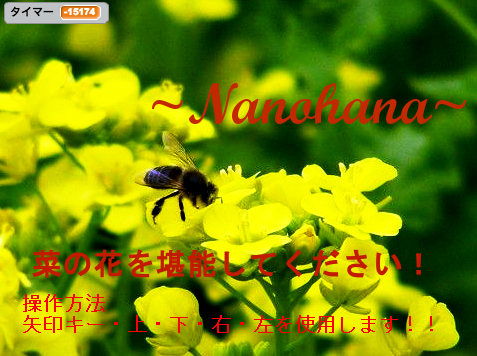
- 菜の花大迷宮
- 菜の花の迷路です。菜の花と菜の花に囲まれている道を通りスタートからゴールを目指すゲームです。
- 青森県をゲームで紹介するミニゲーム集です。青森山田高校情報処理科の3年生が作りました。
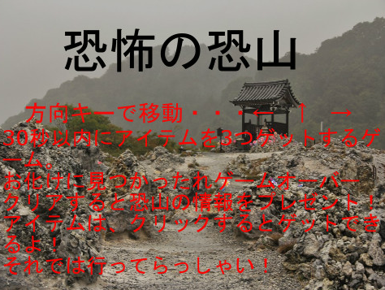
- 恐怖の恐山
- 新感覚ホラーゲーム！アイテムを３つとってお化けから逃げきれ！クリアすると恐山の情報をプレゼント！少し待つといいことが （ ＾ω＾）
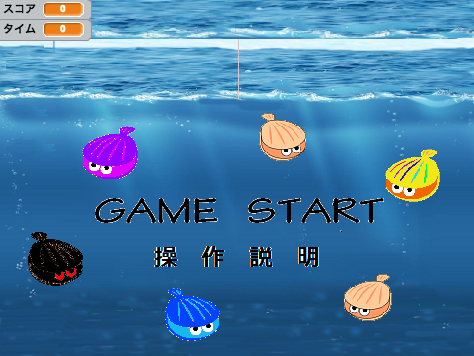
- ホタテ漁獲ゲーム
- 青森県陸奥湾のホタテを漁獲するゲームです。時間制限内にスコアを多くとればクリアです。
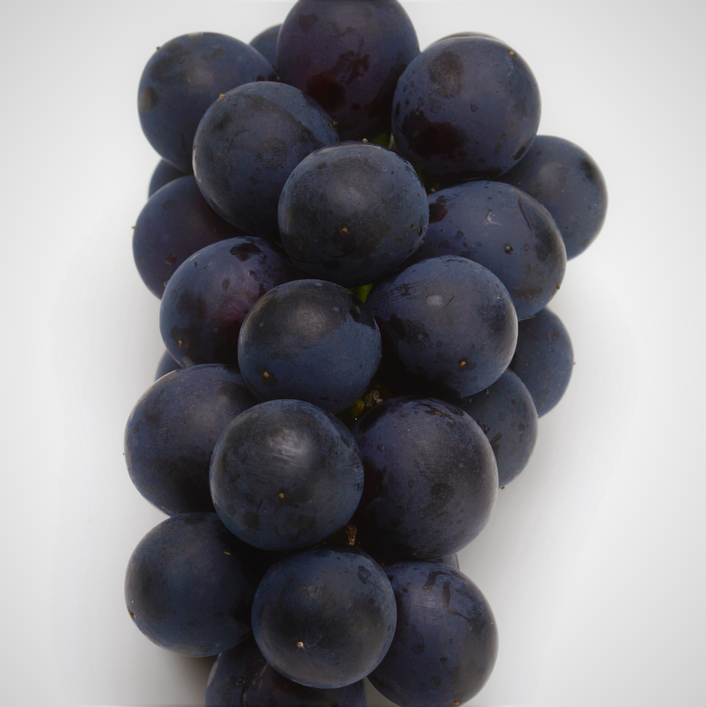
- スチューベンを収穫！
- 青森県鶴田町の名産品スチューベンを収穫するゲームです！害虫に気を付けて制限時間以内に何個とれるかな？
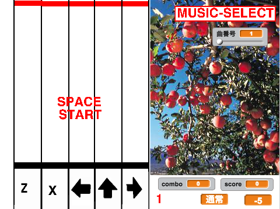
- タイミングゲーム
- 青森関係の画像を張り付けただけのタイミングゲームです。全クリがんばろう！！※音楽は鳴りません （´・ω・｀）
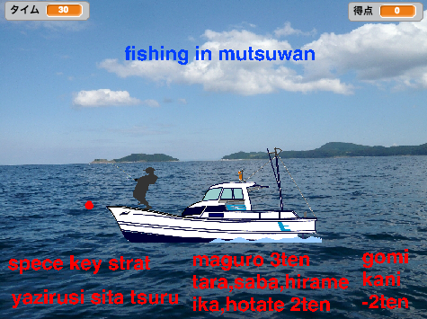
- 陸奥湾で魚を釣ろう
- spaceキーでスタート
↓キーで、糸を垂らす
１０点でクリア
時間内に１０点いかなかったら、ゲームオーバー
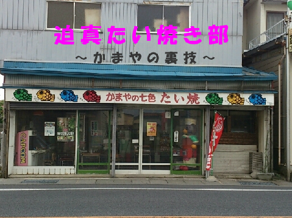
- 迫真たい焼き部
- 板柳町にある「かまや」というたい焼き屋さんでたい焼きを作るゲームです。順番通りに作らないと完成しないので注意！
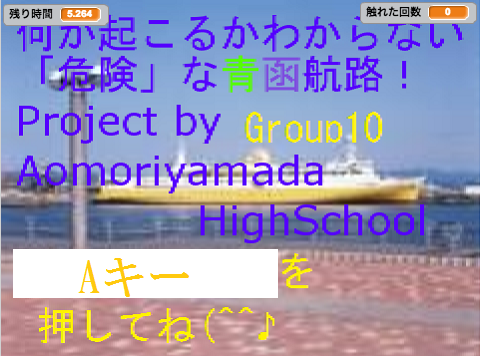
- 「危険」な青函航路！
- ↑で前進↓で後進 ←→で横移動 制限時間10秒
5回障害物に衝突したら沈没
青森と函館を船で安全に運行させよ！
- 青森大学ソフトウェア情報学部のスタッフによる青森山田高校情報処理科での特別授業「プログラミングへの誘い」シリーズの中で、Scratchのプログラミング講座を通じて学んだ内容をもとに、高校生たちが作ったオリジナルのミニゲーム集です。
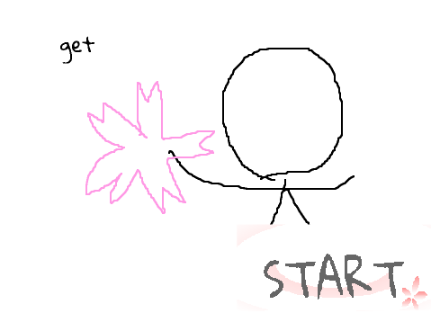
- 桜をキャッチ
- 弘前城に咲く有名な３種の桜をひたすらキャッチするゲーム。しかしルールは弘前城を目指して障害物をよけるだけなので期待しない方がいい。
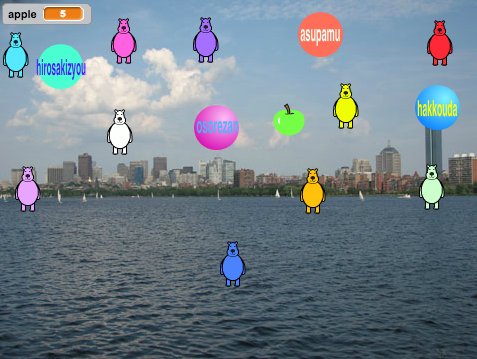
- obstacle
- くまさんを避けながら〇にリンゴを当てる。くまさんに５回当たったらアウト（クリアなし）
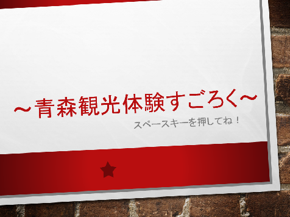
- 青森観光体験スゴロク
- 青森の魅力である食べ物をスゴロクに取り入れたゲームです。紹介した食べ物を食べてもらえれば幸いです。